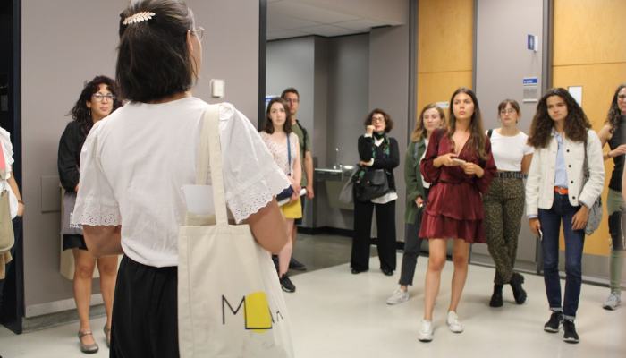

Services de consultation
Un accompagnement professionnel pour vos projets culturels et patrimoniaux.

Recherche
Des projets de recherche-action pour valoriser et documenter le patrimoine culturel.
Un accompagnement professionnel pour vos projets culturels et patrimoniaux.

Des projets de recherche-action pour valoriser et documenter le patrimoine culturel.